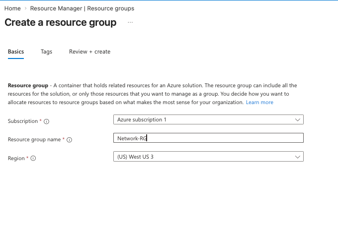
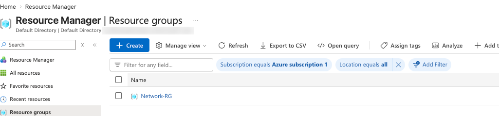
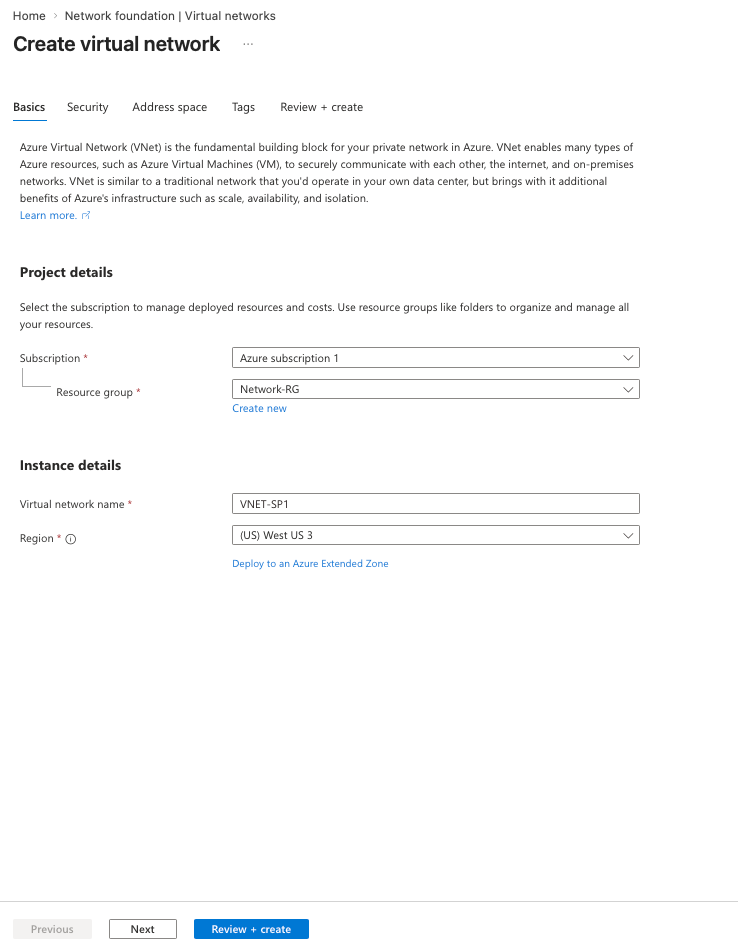
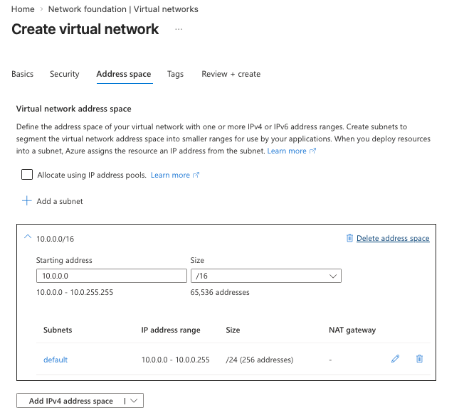
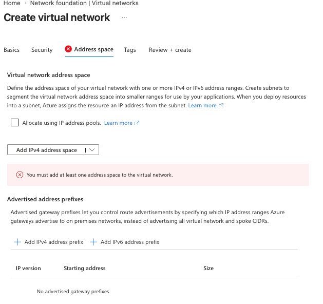
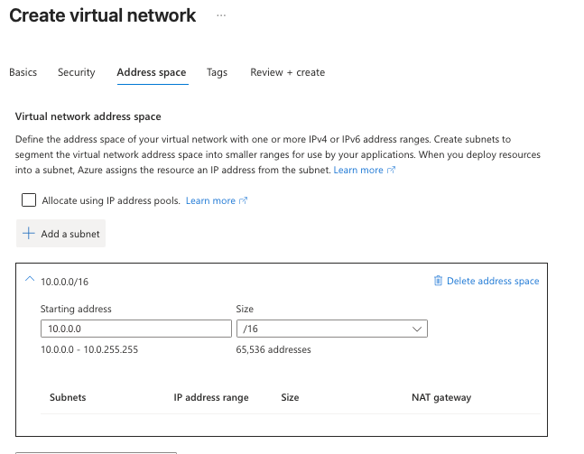
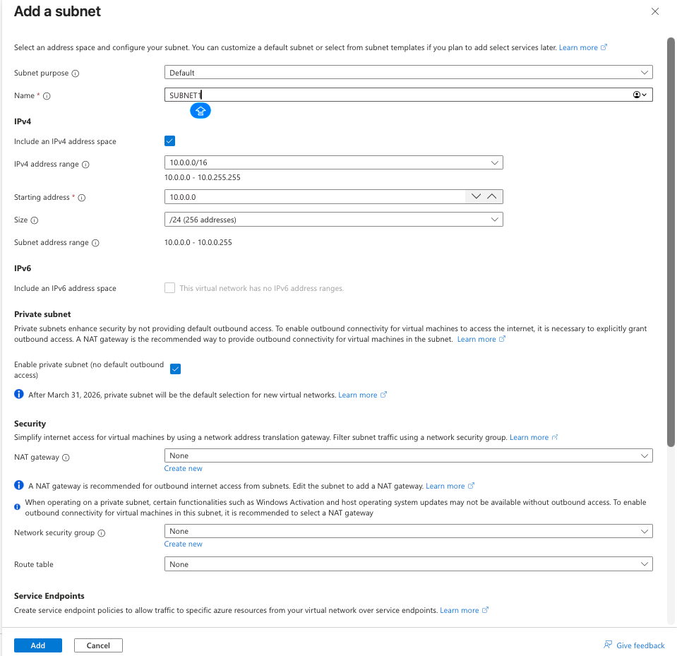
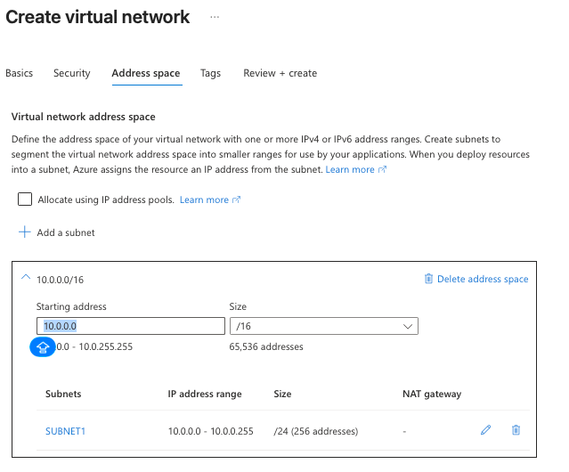
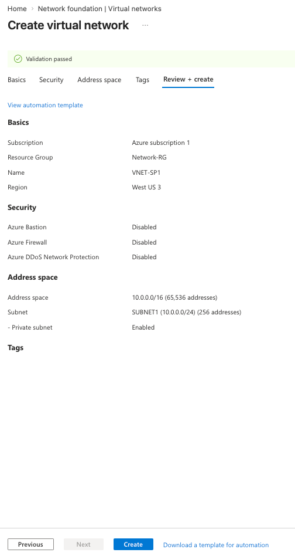
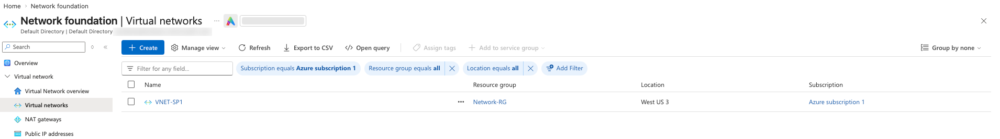

Every VM, private endpoint and internal load balancer in Azure needs a virtual network to live in. This post explains how a VNet and its subnets work, what changed with private subnets in 2026, and then builds VNET-SP1 step by step in the portal and again with the Azure CLI.
An Azure Virtual Network (VNet) is your own private, isolated network inside Azure. Resources in the same VNet talk to each other over private IP addresses, and nothing outside can reach them unless you allow it. It works much like the network in your own datacenter, except there are no switches or cables to manage.
Network-RG in West US 3).Coming from OCI? A VNet is an OCI VCN. Azure subnets are always regional (OCI also has AD-specific subnets), a NAT gateway works the same way, and an NSG covers what OCI splits between security lists and NSGs. Azure has no Internet Gateway resource: internet routing is built into the VNet's system routes.
The address space is the range of private IPs the whole VNet can use, written in CIDR notation. 10.0.0.0/16 means the first 16 bits are fixed, which leaves 65,536 addresses from 10.0.0.0 to 10.0.255.255. Use the private RFC 1918 ranges: 10.0.0.0/8, 172.16.0.0/12 or 192.168.0.0/16.
A subnet is a slice of that address space. Every resource with a network interface goes into a subnet, and subnets are where you attach NSGs, route tables and NAT gateways.
| CIDR | Addresses | Usable in Azure | Typical use |
|---|---|---|---|
/16 | 65,536 | VNet only | A whole VNet |
/24 | 256 | 251 | A normal workload subnet |
/26 | 64 | 59 | Minimum for AzureBastionSubnet and AzureFirewallSubnet |
/27 | 32 | 27 | Recommended for GatewaySubnet |
/29 | 8 | 3 | Smallest IPv4 subnet Azure allows |
Plan before you build. Address spaces of VNets you want to peer or connect to on-premises must not overlap. If your office uses 10.0.0.0/16, pick something else for Azure, such as 10.20.0.0/16. Leave gaps so subnets can grow later.
Azure keeps five addresses in every subnet, which is why a /24 gives you 251 usable IPs instead of 256. That's also why the first VM you deploy into 10.0.0.0/24 gets 10.0.0.4.
For years, a VM in Azure without a public IP could still reach the internet through a hidden, Microsoft-owned IP. This is called default outbound access. It was convenient, but the IP could change without notice, you couldn't control or log it, and workloads ended up with internet access nobody had planned for.
Azure is moving away from it. A private subnet has default outbound access turned off, and as the portal notes in step 7 of the lab, after 31 March 2026 private subnet is the default for new virtual networks. Your SUBNET1 was created this way.
In a private subnet, a VM can still reach other private IPs and Azure services over private endpoints, but it can't reach the internet until you add one of these explicit methods:
| Method | How it works | When to use it |
|---|---|---|
| NAT gateway (recommended) | Attached to the subnet; all outbound traffic leaves through its static public IP(s) | Many VMs need outbound access, like OS updates or calling APIs |
| Public IP on the VM | That VM uses its own IP for inbound and outbound traffic | A single VM that must also be reachable from the internet |
| Load balancer outbound rules | VMs behind a Standard public load balancer share its frontend IP | Already using a public load balancer |
| Azure Firewall / NVA | A route table sends 0.0.0.0/0 to a firewall in a hub VNet | Enterprise hub-and-spoke with central inspection |
As the portal warns, in a private subnet with no outbound method, Windows activation and OS updates can fail. For a lab VM, either add a public IP or attach a NAT gateway (section 9); a NAT gateway is billed per hour plus data processed.
A network security group (NSG) is a stateful firewall made of allow/deny rules. Each rule matches on source, destination, port and protocol and has a priority from 100 to 4096; lower numbers are evaluated first and the first match wins. You can attach an NSG to a subnet, to a network interface, or to both, in which case traffic must pass both.
Every NSG starts with default rules you can't delete but can override with higher-priority ones:
| Direction | Default rule | Effect |
|---|---|---|
| Inbound | AllowVNetInBound (65000) | Anything inside the VNet (and peered VNets) can reach you |
| Inbound | AllowAzureLoadBalancerInBound (65001) | Health probes work |
| Inbound | DenyAllInBound (65500) | Everything else from outside is blocked |
| Outbound | AllowVNetOutBound, AllowInternetOutBound, DenyAllOutBound | Outbound is open unless you restrict it |
Routing happens automatically. Azure adds system routes so all subnets in a VNet can reach each other, plus routes for peered VNets and gateways. A route table (user-defined routes) overrides them, for example to send all traffic through a firewall. The portal's Add a subnet panel in step 7 has fields for an NSG, a NAT gateway and a route table; we left them empty and add an NSG in section 9.
Two more subnet features you'll see in that panel: service endpoints let a subnet reach services like Storage over Azure's backbone, and private endpoints go further by giving the service a private IP inside your subnet.
The name VNET-SP1 fits a common pattern: hub-and-spoke. Shared services such as a firewall, VPN gateway and Bastion sit in a hub VNet, and each workload gets its own spoke VNet peered to the hub.
GatewaySubnet.AzureBastionSubnet, at least /26. This is the Azure Bastion option on the VNet wizard's Security tab, along with Azure Firewall and DDoS Protection.Goal: create the resource group Network-RG, then the VNet VNET-SP1 (10.0.0.0/16) with one private subnet SUBNET1 (10.0.0.0/24) in West US 3. Everything in this part of the lab is free.
Search for Resource groups → + Create. Choose your subscription, enter Network-RG and pick (US) West US 3, then Review + create → Create. Keeping network resources in their own resource group is common practice: the network team can own it while application teams get their own groups.

Network-RG now appears in the Resource groups list.

Search for Virtual networks → + Create. On Basics, pick the subscription and Network-RG, name it VNET-SP1 and use the same region, West US 3. A VNet can only hold resources from its own region, so choose the region your VMs will use.

Leave the Security tab at its defaults (Bastion, Firewall and DDoS Protection off) for this lab. All three are paid services.
On Address space, the portal proposes 10.0.0.0/16 with a subnet called default (10.0.0.0/24). We'll replace it with our own naming.

If you click Delete address space, the tab shows the error "You must add at least one address space to the virtual network." A VNet can't exist without one. This tab also has Advertised address prefixes, which control which ranges a gateway in this VNet advertises to on-premises; leave it empty.

Click Add IPv4 address space, enter starting address 10.0.0.0 and size /16 (65,536 addresses). The subnet list is now empty.

Click + Add a subnet and set:
SUBNET110.0.0.0, Size: /24 (range 10.0.0.0–10.0.0.255)Then click Add. Note the two information messages: private subnet becomes the default for new VNets after 31 March 2026, and a NAT gateway is the recommended way to give it internet access.

SUBNET1 now sits in 10.0.0.0/16 with 256 addresses, of which 251 are usable. The rest of the /16 is free for future subnets such as 10.0.1.0/24.

Open Review + create. Validation passes and the summary confirms the name, region, address space, SUBNET1 and Private subnet: Enabled. Before clicking Create, click View automation template to see the ARM template the portal generated; you can save it to recreate the VNet later.

After a few seconds, VNET-SP1 appears under Virtual networks in Network-RG, West US 3. Open it and look at Subnets, Connected devices (empty until you deploy a VM) and Peerings.

Run these in Cloud Shell (Bash). They build exactly what the portal built.
RG=Network-RG
LOCATION=westus3
# 1. Resource group
az group create --name $RG --location $LOCATION
# 2. VNet with its address space and SUBNET1
az network vnet create -g $RG -n VNET-SP1 -l $LOCATION \
--address-prefixes 10.0.0.0/16 \
--subnet-name SUBNET1 --subnet-prefixes 10.0.0.0/24
# 3. Make SUBNET1 a private subnet (no default outbound access)
az network vnet subnet update -g $RG --vnet-name VNET-SP1 -n SUBNET1 \
--default-outbound-access false
# 4. Verify
az network vnet show -g $RG -n VNET-SP1 \
--query "{name:name, space:addressSpace.addressPrefixes, location:location}" -o jsonc
az network vnet subnet list -g $RG --vnet-name VNET-SP1 \
--query "[].{name:name, prefix:addressPrefix, defaultOutbound:defaultOutboundAccess}" -o tableThe subnet list shows SUBNET1 10.0.0.0/24 False. If your CLI doesn't recognise --default-outbound-access, update it with az upgrade.
# NSG that allows HTTPS from the internet
az network nsg create -g $RG -n NSG-SUBNET2
az network nsg rule create -g $RG --nsg-name NSG-SUBNET2 \
-n allow-https --priority 100 --direction Inbound \
--access Allow --protocol Tcp --destination-port-ranges 443
# Second subnet in the free part of the address space, with the NSG attached
az network vnet subnet create -g $RG --vnet-name VNET-SP1 -n SUBNET2 \
--address-prefixes 10.0.1.0/24 \
--network-security-group NSG-SUBNET2 \
--default-outbound-access false
# See the NSG's rules, including the defaults
az network nsg rule list -g $RG --nsg-name NSG-SUBNET2 --include-default -o tableIn the portal, VNET-SP1 → Subnets shows SUBNET1 and SUBNET2, with NSG-SUBNET2 in the security group column for SUBNET2.
az network public-ip create -g $RG -n PIP-NATGW --sku Standard --allocation-method Static
az network nat gateway create -g $RG -n NATGW-SP1 \
--public-ip-addresses PIP-NATGW --idle-timeout 4
az network vnet subnet update -g $RG --vnet-name VNET-SP1 -n SUBNET1 \
--nat-gateway NATGW-SP1
# The public IP every VM in SUBNET1 will use for outbound traffic
az network public-ip show -g $RG -n PIP-NATGW --query ipAddress -o tsvA VM in SUBNET1 without its own public IP can now run curl ifconfig.me, and the address it prints is the NAT gateway's IP.
The NAT gateway and its public IP are billed hourly. Remove them when you're done: az network vnet subnet update -g $RG --vnet-name VNET-SP1 -n SUBNET1 --remove natGateway, then az network nat gateway delete -g $RG -n NATGW-SP1 and az network public-ip delete -g $RG -n PIP-NATGW.
az network vnet create -g $RG -n VNET-SP2 -l $LOCATION \
--address-prefixes 10.1.0.0/16 --subnet-name SUBNET1 --subnet-prefixes 10.1.0.0/24
# Peering is created in both directions
az network vnet peering create -g $RG -n SP1-to-SP2 \
--vnet-name VNET-SP1 --remote-vnet VNET-SP2 --allow-vnet-access
az network vnet peering create -g $RG -n SP2-to-SP1 \
--vnet-name VNET-SP2 --remote-vnet VNET-SP1 --allow-vnet-access
az network vnet peering list -g $RG --vnet-name VNET-SP1 \
--query "[].{name:name, state:peeringState}" -o tableThe state shows Connected. Try creating a third VNet with 10.0.0.0/16 and peering it to SP1: Azure rejects it because the address spaces overlap.
Clean up: az group delete --name Network-RG --yes --no-wait removes the VNets, subnets, NSG, NAT gateway, public IP and peerings.
GatewaySubnet, AzureBastionSubnet and AzureFirewallSubnet must be spelled exactly like that and must not have other resources in them.168.63.129.16. VMs use it by default for name resolution; don't block it in NSGs or the guest firewall.Pick an answer to see whether it's right and why.
.4.Next in the series: deploying a VM into SUBNET1 and reaching it securely with Azure Bastion.